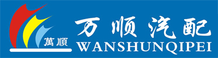

成都万顺汽配有限公司，创立于2009年，在不到4年的时间里，取得了从无到有、从小到大、从弱到强、从省内到省外、从国内到外骄人的业绩。
成都万顺汽配位于经济发达、物流方便的四川省会----成都市，经营品种上万种，囊括华菱商用车、搅拌车、江淮商用车、三环离合器、好斯基离合器、扭力胶芯、紧箍件、各种管类接头、雨刮雨刷易损件。
成都万顺汽配是江淮（JAC）重卡配件、华菱（CAMC）重卡配件西南地区经销商；黄石三环离合器、黄石好斯基离合器、浙江紫阳扭力胶芯西南总经销；是中保PICC、平安、太平洋、中华联合、天平等保险公司的机动车零配件报价网络协作单位。经过几年的精心经营，我公司已形成了宽广而稳定的销售渠道，健全而成熟的销售网络体系，覆盖浙江、江苏、上海、湖南、湖北、福建、安徽、江西等省市。
通过全体万顺汽配员工的共同努力，省内省外的客户以及周边省市的保险公司都给予我公司的高度评价。我们采用连锁经营模式，以及先进的汽配连锁ERP数字化管理系统。经过几年的发展，更是储备了一批熟知汽配市场、精通汽配经营的专业人士。我们相信，通过万顺汽配全体员工的共同努力， 广大供应商和各地客户、朋友的大力支持、配合，我们有信心、有能力在汽配经营这条道路上越做越强，路越走越远。
Copyright©2010-2014 All Rights Reserved
成都市万顺汽配有限公司